Resurrection Part 1 — 10 illustrated Shorts (preview)
Preview only, not posted anywhere. Source: BV5gwxjnniI · Pastor David G. Kincer. Each card follows the clip-page order: video → short answer → his words → Scripture (NKJV) → full message.
Is it foolish to question the resurrection?
Watch the clip
Our short summary of this clip, not the preacher's exact words
Short answer: He says the questions are honest, but Paul answers "Fool," meaning we exaggerate our own intellect and miss common sense, so Paul explains the resurrection through common sense first.
Why: 1 Corinthians 15:35–36: "How are the dead raised up?... Foolish one, what you sow is not made alive unless it dies."
“So some of us have questions and they're honest questions. But watch, watch how Paul answers.”
▶ 2:30
“Fool. Now the word fool means several things.”
▶ 2:40
“He said, you guys are missing common sense here. Let's look at this through common sense.”
▶ 3:37
1 Corinthians 15:35-36 But someone will say, “How are the dead raised up? And with what body do they come?” Foolish one, what you sow is not made alive unless it dies.
Full sermon: Resurrection Part 1 — full message page
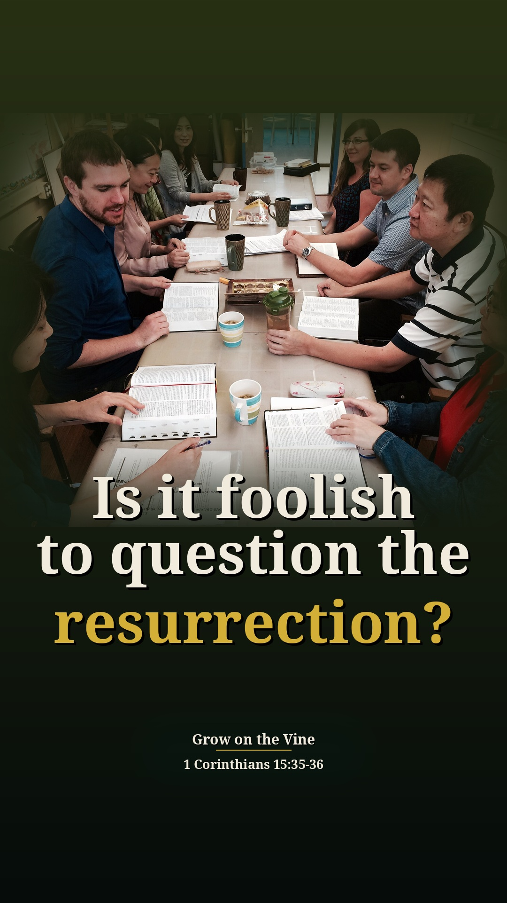
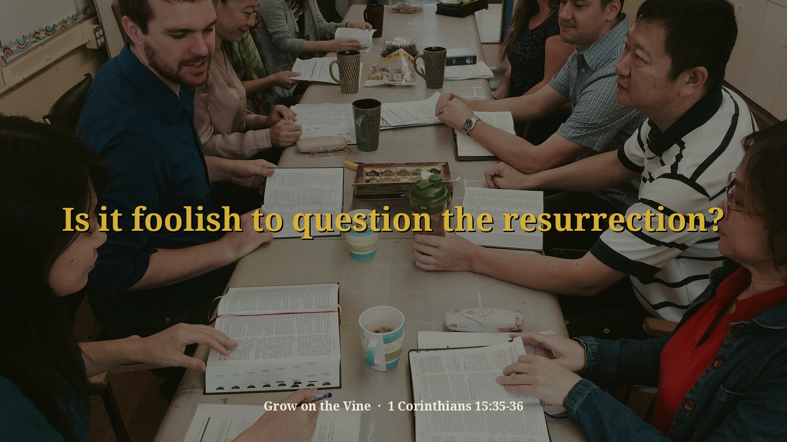
Other title options:
- Why did Paul answer "Fool"?
- Can common sense help us believe?
YouTube description (draft)
Is it foolish to question the resurrection? Read the short answer, the Scripture (NKJV) and the pastor's own words: https://growonthevine.com/clips/is-it-foolish-to-question-the-resurrection/ To see the full message, click here: https://www.youtube.com/watch?v=BV5gwxjnniI&t=150s He says the questions are honest, but Paul answers "Fool," meaning we exaggerate our own intellect and miss common sense, so Paul explains the resurrection through common sense first. 1 Corinthians 15:35-36 (NKJV) Pastor David G. Kincer · Grow on the Vine Music: "Inspired" Kevin MacLeod (incompetech.com) Licensed under Creative Commons: By Attribution 4.0 License http://creativecommons.org/licenses/by/4.0/ #Shorts #Bible #Jesus
What does a seed teach us about rising again?
Watch the clip
Our short summary of this clip, not the preacher's exact words
Short answer: He says the seed has to die before it can live again and produce a body and fruit; it comes alive on the inside first, and God gives every seed its own body.
Why: 1 Corinthians 15:36–38: what you sow is not made alive unless it dies, and God gives it a body as He pleases.
“That which you sow is not made alive except it dies. Now he's talking about plant seeds, okay?”
▶ 4:40
“The seed has to die before it can live again and produce a body. And fruit.”
▶ 5:39
“Come alive on the inside first. And that's how we start on the inside first.”
▶ 6:04
1 Corinthians 15:36-38 Foolish one, what you sow is not made alive unless it dies. And what you sow, you do not sow that body that shall be, but mere grain—perhaps wheat or some other grain. But God gives it a body as He pleases, and to each seed its own body.
Full sermon: Resurrection Part 1 — full message page
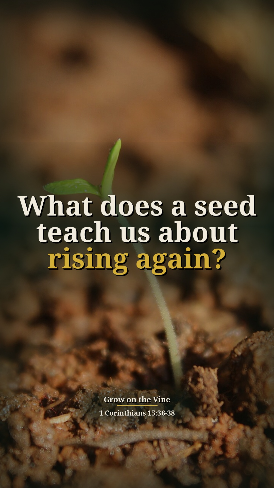
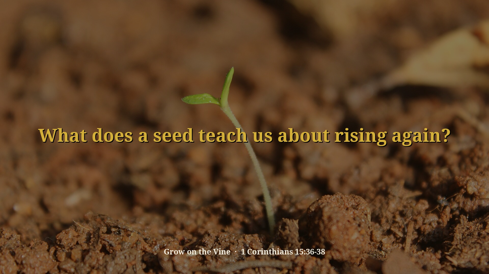
Other title options:
- Does a seed have to die to live?
- How does God raise the dead?
YouTube description (draft)
What does a seed teach us about rising again? Read the short answer, the Scripture (NKJV) and the pastor's own words: https://growonthevine.com/clips/what-does-a-seed-teach-about-rising-again/ To see the full message, click here: https://www.youtube.com/watch?v=BV5gwxjnniI&t=280s He says the seed has to die before it can live again and produce a body and fruit; it comes alive on the inside first, and God gives every seed its own body. 1 Corinthians 15:36-38 (NKJV) Pastor David G. Kincer · Grow on the Vine Music: "Morning" Kevin MacLeod (incompetech.com) Licensed under Creative Commons: By Attribution 4.0 License http://creativecommons.org/licenses/by/4.0/ #Shorts #Bible #Jesus
What kind of body will we have?
Watch the clip
Our short summary of this clip, not the preacher's exact words
Short answer: He says the body is sown in corruption and starts rotting, but it is raised in incorruption, honor and supernatural power: a spiritual, supernatural body that doesn't decay and lives forever.
Why: 1 Corinthians 15:42–44: sown a natural body, raised a spiritual body.
“When you take your last breath, you start rotting.”
▶ 9:38
“It is sown in weakness, it is raised in power. Supernatural power is how it's raised.”
▶ 10:17
“So the body comes out of the grave a what? Supernatural body that doesn't decay anymore. That lives forever.”
▶ 10:45
1 Corinthians 15:42-44 So also is the resurrection of the dead. The body is sown in corruption, it is raised in incorruption. It is sown in dishonor, it is raised in glory. It is sown in weakness, it is raised in power. It is sown a natural body, it is raised a spiritual body. There is a natural body, and there is a spiritual body.
Full sermon: Resurrection Part 1 — full message page
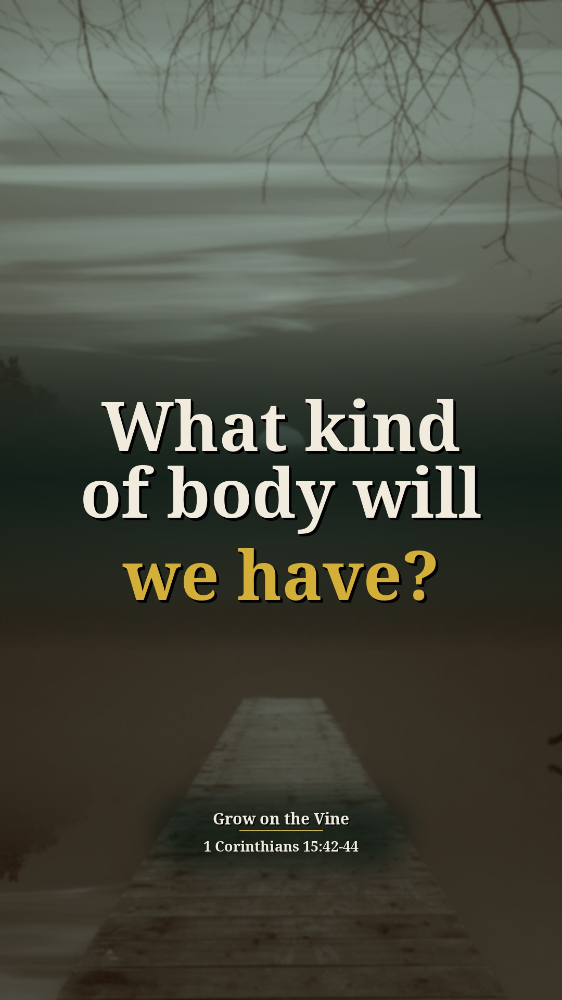
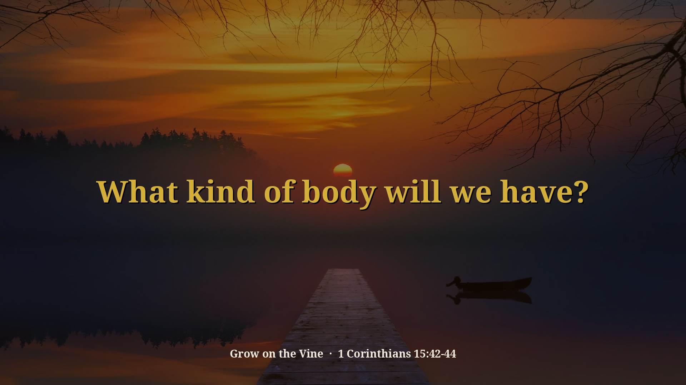
Other title options:
- What happens to our bodies at the resurrection?
- Will we be raised in power?
YouTube description (draft)
What kind of body will we have? Read the short answer, the Scripture (NKJV) and the pastor's own words: https://growonthevine.com/clips/what-kind-of-body-will-we-have/ To see the full message, click here: https://www.youtube.com/watch?v=BV5gwxjnniI&t=556s He says the body is sown in corruption and starts rotting, but it is raised in incorruption, honor and supernatural power: a spiritual, supernatural body that doesn't decay and lives forever. 1 Corinthians 15:42-44 (NKJV) Pastor David G. Kincer · Grow on the Vine Music: "Clean Soul" Kevin MacLeod (incompetech.com) Licensed under Creative Commons: By Attribution 4.0 License http://creativecommons.org/licenses/by/4.0/ #Shorts #Bible #Jesus
Did Jesus have blood after He rose?
Watch the clip
Our short summary of this clip, not the preacher's exact words
Short answer: He teaches that Jesus' blood drained out when He died, and when He came out of the grave the holes were still in His hands and side but no blood dripped out, because He had a supernatural, spiritual body.
Why: He points to the wounds Thomas was invited to touch (John 20:27) and says natural people need blood because blood is the life of the flesh.
“Now, here's Jesus Christ. I used him because he came out of the grave. His blood drained out. He died.”
▶ 10:58
“But there's no blood dripping out, why? Because he has a supernatural body.”
▶ 11:25
John 20:27 Then He said to Thomas, “Reach your finger here, and look at My hands; and reach your hand here, and put it into My side. Do not be unbelieving, but believing.”
1 Corinthians 15:44 It is sown a natural body, it is raised a spiritual body. There is a natural body, and there is a spiritual body.
Full sermon: Resurrection Part 1 — full message page
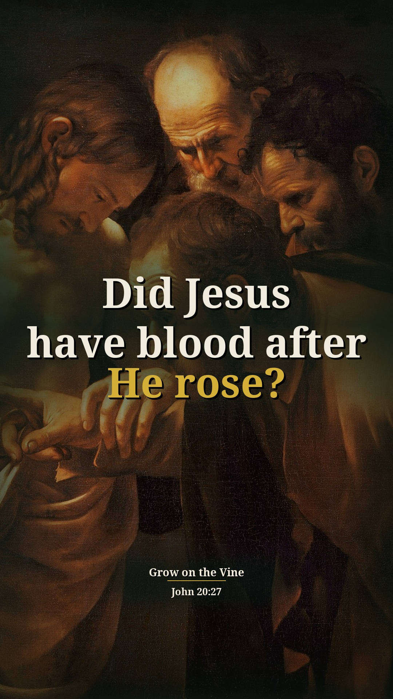
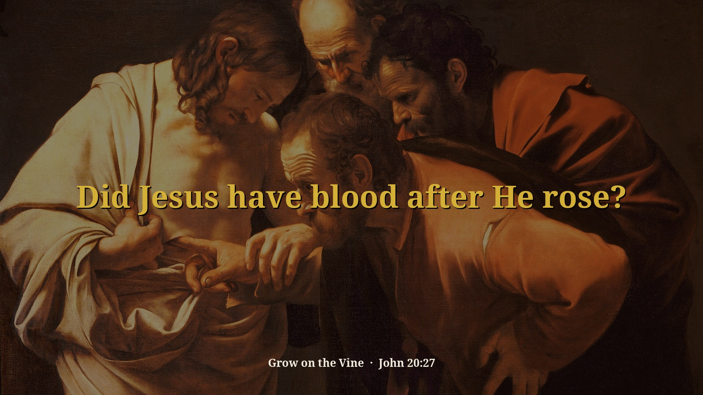
Other title options:
- Why were the nail holes still there?
- What was Jesus' risen body like?
YouTube description (draft)
Did Jesus have blood after He rose? Read the short answer, the Scripture (NKJV) and the pastor's own words: https://growonthevine.com/clips/did-jesus-have-blood-after-he-rose/ To see the full message, click here: https://www.youtube.com/watch?v=BV5gwxjnniI&t=658s He teaches that Jesus' blood drained out when He died, and when He came out of the grave the holes were still in His hands and side but no blood dripped out, because He had a supernatural, spiritual body. John 20:27 (NKJV) Pastor David G. Kincer · Grow on the Vine Music: "Crinoline Dreams" Kevin MacLeod (incompetech.com) Licensed under Creative Commons: By Attribution 4.0 License http://creativecommons.org/licenses/by/4.0/ #Shorts #Bible #Jesus
Is Jesus more than a good man?
Watch the clip
Our short summary of this clip, not the preacher's exact words
Short answer: Yes. He says the last Adam became a life-giving spirit: Jesus is more than a prophet and more than a good man, He gives you life. Jesus is the tree of life Adam passed over.
Why: 1 Corinthians 15:45: the first Adam a living being, the last Adam a life-giving spirit.
“Jesus is more than a prophet. Jesus is more than a good man. Jesus gives you life.”
▶ 15:05
“Adam made his mistake by embracing the tree of knowledge of good and evil over the tree of life. Jesus is that tree of life.”
▶ 15:22
1 Corinthians 15:45 And so it is written, “The first man Adam became a living being.” The last Adam became a life-giving spirit.
Genesis 2:7 And the LORD God formed man of the dust of the ground, and breathed into his nostrils the breath of life; and man became a living being.
Full sermon: Resurrection Part 1 — full message page
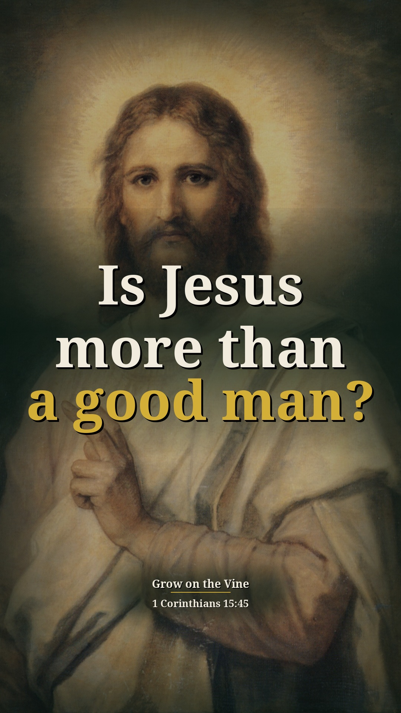
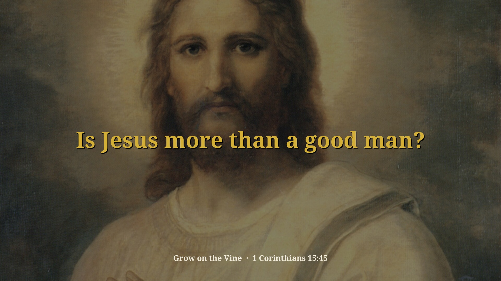
Other title options:
- What is the tree of life?
- What does "life-giving spirit" mean?
YouTube description (draft)
Is Jesus more than a good man? Read the short answer, the Scripture (NKJV) and the pastor's own words: https://growonthevine.com/clips/is-jesus-more-than-a-good-man/ To see the full message, click here: https://www.youtube.com/watch?v=BV5gwxjnniI&t=885s Yes. He says the last Adam became a life-giving spirit: Jesus is more than a prophet and more than a good man, He gives you life. Jesus is the tree of life Adam passed over. 1 Corinthians 15:45 (NKJV) Pastor David G. Kincer · Grow on the Vine Music: "Faith In Tomorrow" by Sascha Ende, licensed under CC BY 4.0 (https://creativecommons.org/licenses/by/4.0/) #Shorts #Bible #Jesus
Do you have to wait until death to find life?
Watch the clip
Our short summary of this clip, not the preacher's exact words
Short answer: No. He says you don't have to wait to die and be resurrected at the end time to find life: Jesus makes you alive now, forgiving all trespasses, so you become a new creature.
Why: Colossians 2:13 and 2 Corinthians 5:17: dead in trespasses, made alive with Him; if anyone is in Christ, he is a new creation.
“See, I don't have to wait to die and be resurrected at the end time to find life.”
▶ 17:07
“Doesn't matter if it's one or one hundred. He forgives you of all.”
▶ 17:56
“That's why the Bible says, if any man be in Christ, he is a new creature.”
▶ 18:13
Colossians 2:13 And you, being dead in your trespasses and the uncircumcision of your flesh, He has made alive together with Him, having forgiven you all trespasses,
2 Corinthians 5:17 Therefore, if anyone is in Christ, he is a new creation; old things have passed away; behold, all things have become new.
Full sermon: Resurrection Part 1 — full message page
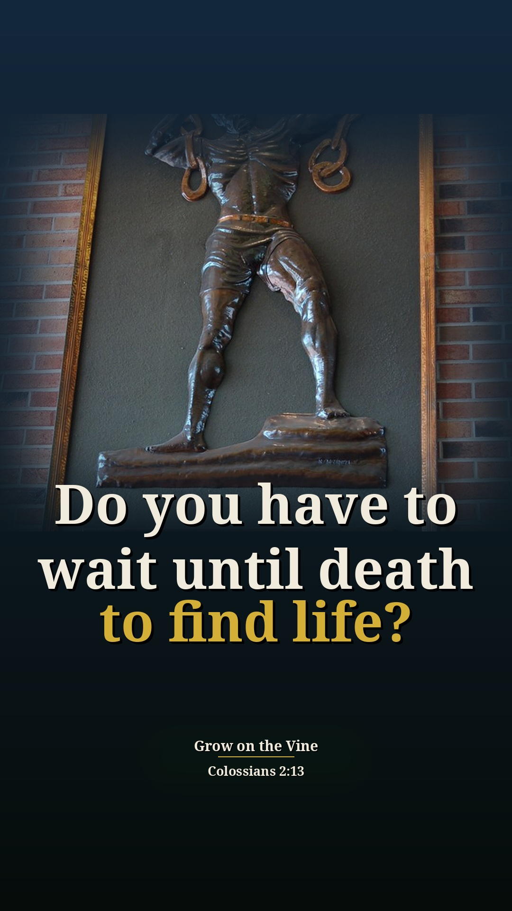
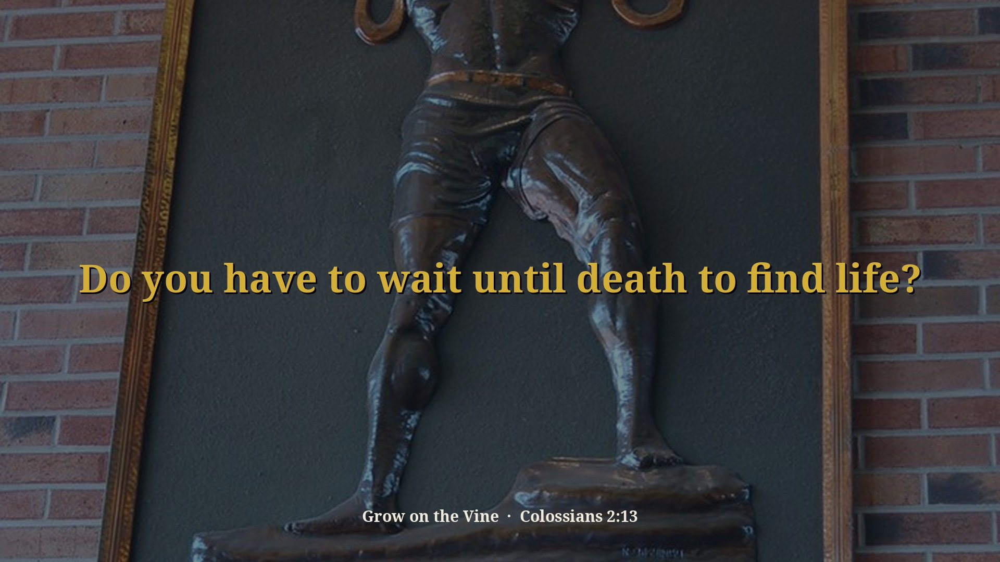
Other title options:
- Can Jesus raise you now?
- Does God forgive all sins?
YouTube description (draft)
Do you have to wait until death to find life? Read the short answer, the Scripture (NKJV) and the pastor's own words: https://growonthevine.com/clips/do-you-have-to-die-to-find-life/ To see the full message, click here: https://www.youtube.com/watch?v=BV5gwxjnniI&t=1027s No. He says you don't have to wait to die and be resurrected at the end time to find life: Jesus makes you alive now, forgiving all trespasses, so you become a new creature. Colossians 2:13 (NKJV) Pastor David G. Kincer · Grow on the Vine Music: "Wholesome" Kevin MacLeod (incompetech.com) Licensed under Creative Commons: By Attribution 4.0 License http://creativecommons.org/licenses/by/4.0/ #Shorts #Bible #Jesus
How are we changed into His image?
Watch the clip
Our short summary of this clip, not the preacher's exact words
Short answer: He says as we behold the glory of the Lord in the Word of God we are changed into the same image, by this life-giving Jesus and by the Spirit of the Lord, whose presence is still with us.
Why: 2 Corinthians 3:18: beholding as in a mirror the glory of the Lord, we are transformed into the same image.
“We are changed into the same image. How are we changed? By this life-giving Jesus.”
▶ 20:38
“Yes, Jesus is in heaven, but his Spirit is on earth.”
▶ 20:56
2 Corinthians 3:18 But we all, with unveiled face, beholding as in a mirror the glory of the Lord, are being transformed into the same image from glory to glory, just as by the Spirit of the Lord.
Full sermon: Resurrection Part 1 — full message page
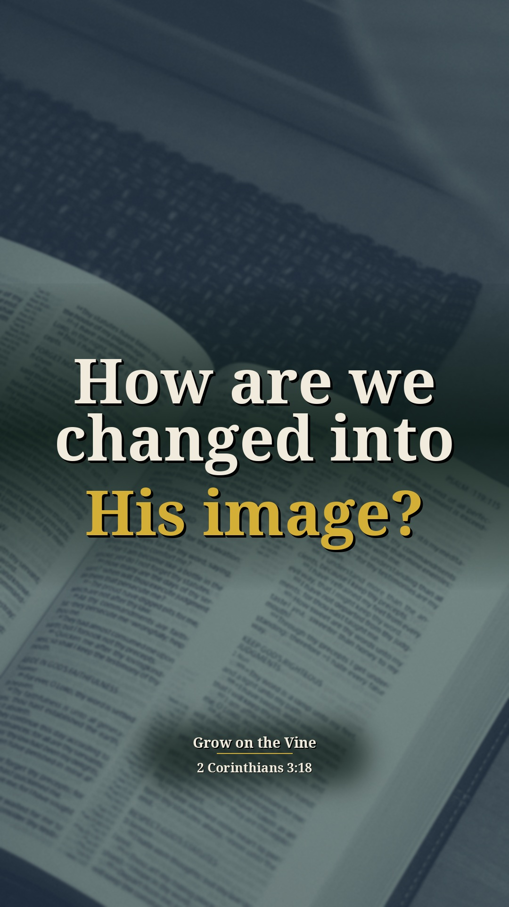
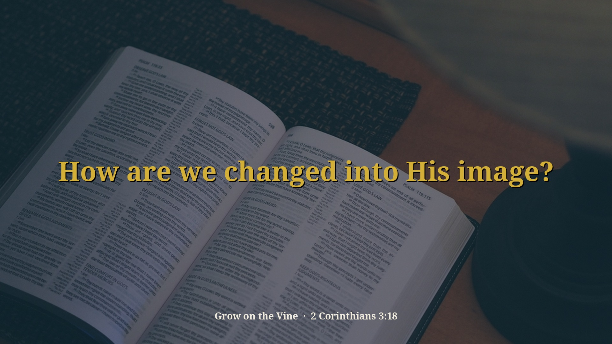
Other title options:
- What happens when we behold God's glory?
- Is the Holy Spirit still with us?
YouTube description (draft)
How are we changed into His image? Read the short answer, the Scripture (NKJV) and the pastor's own words: https://growonthevine.com/clips/how-are-we-changed-into-his-image/ To see the full message, click here: https://www.youtube.com/watch?v=BV5gwxjnniI&t=1218s He says as we behold the glory of the Lord in the Word of God we are changed into the same image, by this life-giving Jesus and by the Spirit of the Lord, whose presence is still with us. 2 Corinthians 3:18 (NKJV) Pastor David G. Kincer · Grow on the Vine Music: "Sapphire Isle" Kevin MacLeod (incompetech.com) Licensed under Creative Commons: By Attribution 4.0 License http://creativecommons.org/licenses/by/4.0/ #Shorts #Bible #Jesus
Why does the Bible call death sleep?
Watch the clip
Our short summary of this clip, not the preacher's exact words
Short answer: He says the Bible uses sleep for death because we don't stay in the grave: sinner or saint, it's temporary, and we will come out like people waking from sleep.
Why: 1 Corinthians 15:51: "We shall not all sleep, but we shall all be changed."
“Because we don't stay in that grave, folks. Whether you are a sinner or a saint.”
▶ 22:30
“We're only dead physically temporarily.”
▶ 22:54
1 Corinthians 15:51-52 Behold, I tell you a mystery: We shall not all sleep, but we shall all be changed— in a moment, in the twinkling of an eye, at the last trumpet. For the trumpet will sound, and the dead will be raised incorruptible, and we shall be changed.
Full sermon: Resurrection Part 1 — full message page
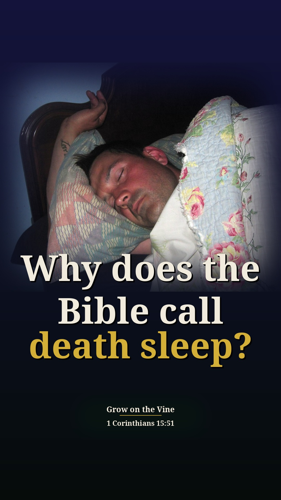
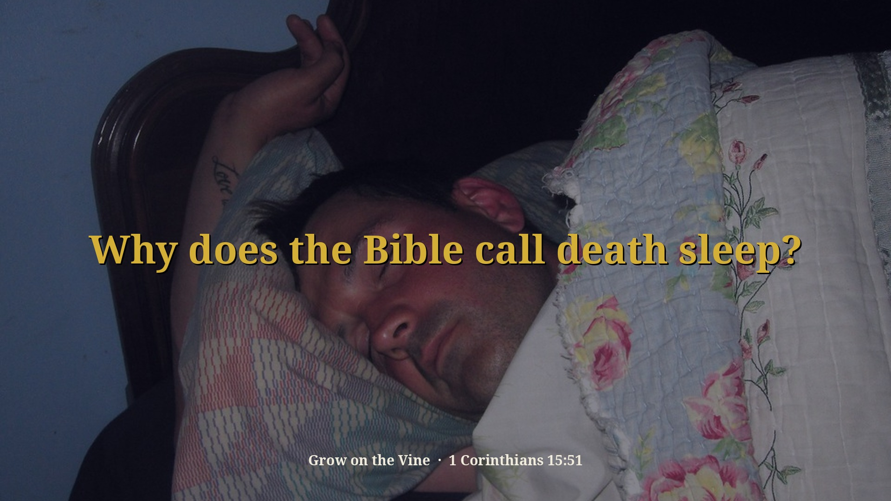
Other title options:
- Is the grave the end?
- Will everyone come out of the grave?
YouTube description (draft)
Why does the Bible call death sleep? Read the short answer, the Scripture (NKJV) and the pastor's own words: https://growonthevine.com/clips/why-does-the-bible-call-death-sleep/ To see the full message, click here: https://www.youtube.com/watch?v=BV5gwxjnniI&t=1341s He says the Bible uses sleep for death because we don't stay in the grave: sinner or saint, it's temporary, and we will come out like people waking from sleep. 1 Corinthians 15:51 (NKJV) Pastor David G. Kincer · Grow on the Vine Music: "Clear Air" Kevin MacLeod (incompetech.com) Licensed under Creative Commons: By Attribution 4.0 License http://creativecommons.org/licenses/by/4.0/ #Shorts #Bible #Jesus
How fast will we be changed?
Watch the clip
Our short summary of this clip, not the preacher's exact words
Short answer: He says those alive will be changed faster than he can snap his finger: in a moment, in the twinkling of an eye at the last trumpet, into an everlasting body. That is why Christ came: to change us.
Why: 1 Corinthians 15:51–52: in a moment, in the twinkling of an eye, at the last trumpet, the dead will be raised incorruptible and we shall be changed.
“We're going to be changed. Just like that. Faster than I can snap my finger.”
▶ 23:31
“And that's why Christ came in the first place. He wants to change us from a sinner to one living righteous.”
▶ 23:59
1 Corinthians 15:51-52 Behold, I tell you a mystery: We shall not all sleep, but we shall all be changed— in a moment, in the twinkling of an eye, at the last trumpet. For the trumpet will sound, and the dead will be raised incorruptible, and we shall be changed.
Full sermon: Resurrection Part 1 — full message page
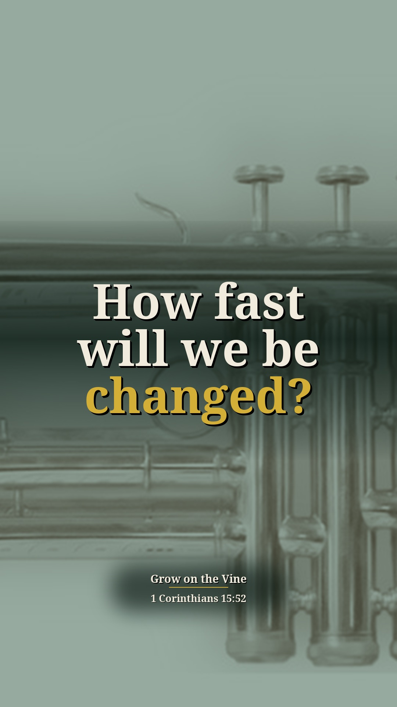
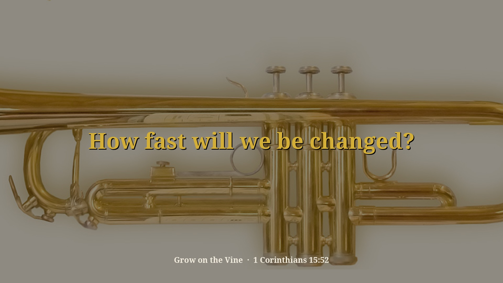
Other title options:
- What happens at the last trumpet?
- Why did Christ come in the first place?
YouTube description (draft)
How fast will we be changed? Read the short answer, the Scripture (NKJV) and the pastor's own words: https://growonthevine.com/clips/how-fast-will-we-be-changed/ To see the full message, click here: https://www.youtube.com/watch?v=BV5gwxjnniI&t=1379s He says those alive will be changed faster than he can snap his finger: in a moment, in the twinkling of an eye at the last trumpet, into an everlasting body. That is why Christ came: to change us. 1 Corinthians 15:52 (NKJV) Pastor David G. Kincer · Grow on the Vine Music: "Enchanted Journey" Kevin MacLeod (incompetech.com) Licensed under Creative Commons: By Attribution 4.0 License http://creativecommons.org/licenses/by/4.0/ #Shorts #Bible #Jesus
Can anyone chart the end times?
Watch the clip
Our short summary of this clip, not the preacher's exact words
Short answer: He says something will transpire that we don't understand yet, and people putting their little charts together are way off. At Jesus' first coming they understood it only as He did it, so we need to let God be God.
Why: He closes with the hope that if we love Him we will be like Him when He comes (1 John 3:2).
“And these people that try to put all their little charts together are way off. And how do I know? I try to put my chart together.”
▶ 29:37
“I mean, we need to let God be God.”
▶ 30:20
1 John 3:2 Beloved, now we are children of God; and it has not yet been revealed what we shall be, but we know that when He is revealed, we shall be like Him, for we shall see Him as He is.
Full sermon: Resurrection Part 1 — full message page
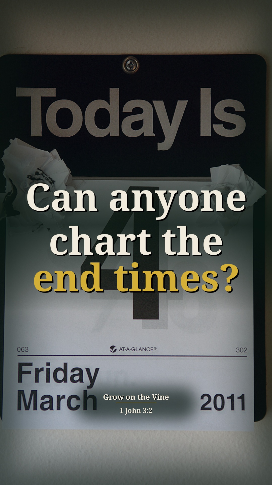
Other title options:
- Did anyone understand Jesus' first coming ahead of time?
- Should we let God be God?
YouTube description (draft)
Can anyone chart the end times? Read the short answer, the Scripture (NKJV) and the pastor's own words: https://growonthevine.com/clips/can-anyone-chart-the-end-times/ To see the full message, click here: https://www.youtube.com/watch?v=BV5gwxjnniI&t=1756s He says something will transpire that we don't understand yet, and people putting their little charts together are way off. At Jesus' first coming they understood it only as He did it, so we need to let God be God. 1 John 3:2 (NKJV) Pastor David G. Kincer · Grow on the Vine Music: "Stoic Morning" Kevin MacLeod (incompetech.com) Licensed under Creative Commons: By Attribution 4.0 License http://creativecommons.org/licenses/by/4.0/ #Shorts #Bible #Jesus